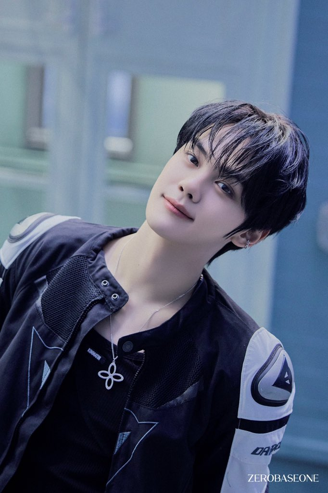
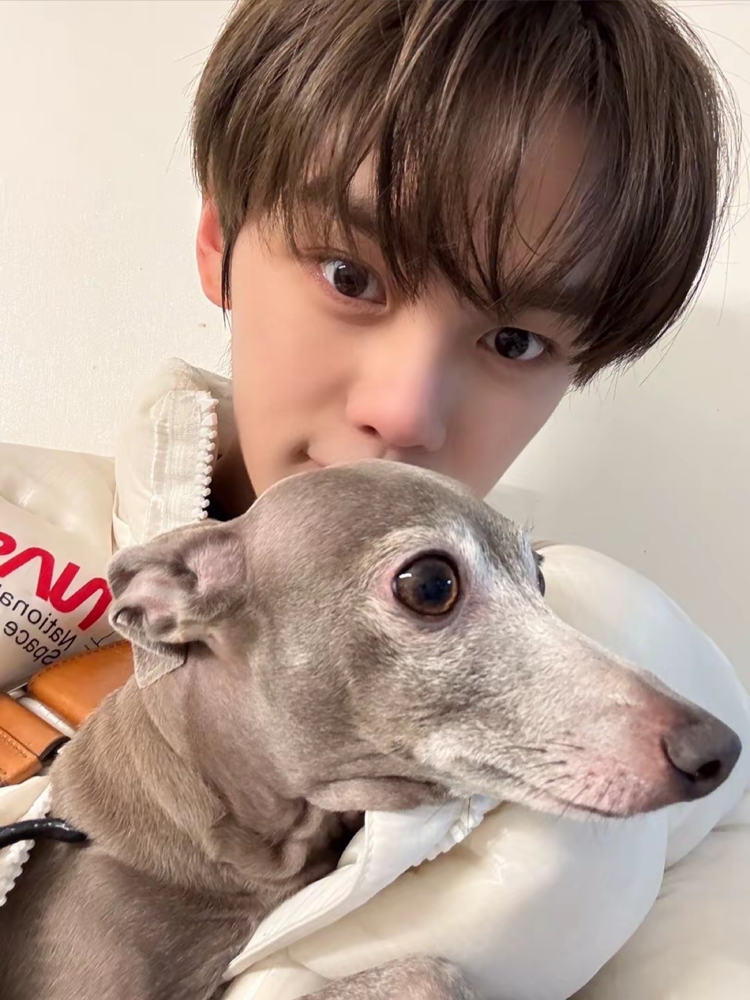
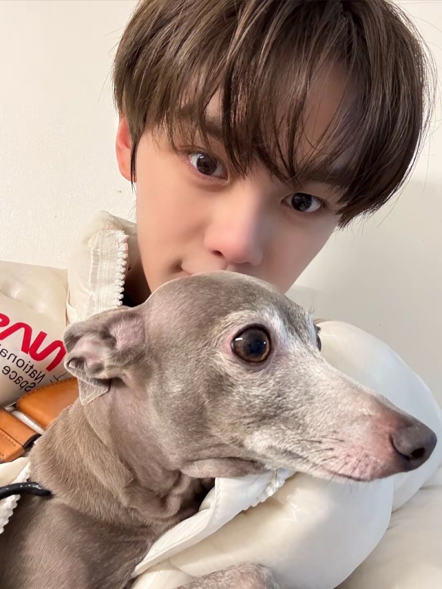
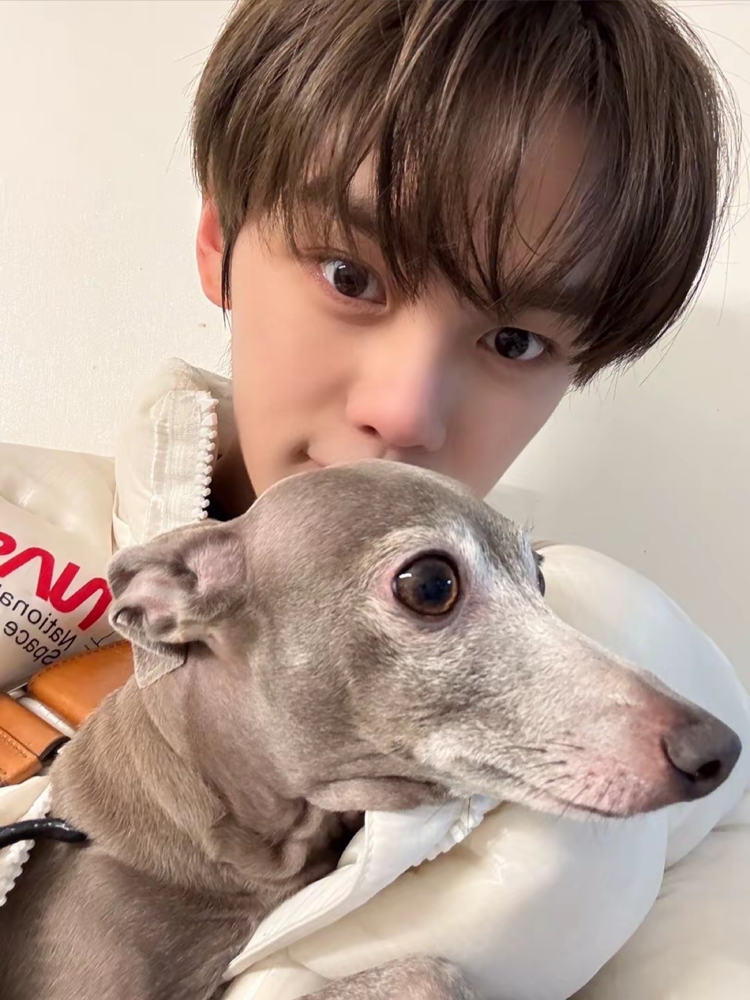

金奎彬-Kim GyuVin
基本資料
生日：2004/08/30
身高：188cm
MBTI：ENFP
國籍：韓國
動物塑：
狗狗
個人魅力點：
養了一隻叫eumppappa的狗、
腿比我的命還長、超愛芒果、長得像狗(褒)、
跟韓彬吃到好吃的會：Who made this(指)
音樂原聲帶
2025/06/16：Running （달려가）
綜藝節目
2023/11/14：《韓文哲的黑盒子評論》E55
2024/05/29：《셀폰KODE》
節目主持
2024/05/04、08/10：《Show! 音樂中心》 與朴乾旭擔任特別MC
2024/05/18、08/17-09/07：Show! 音樂中心》
2024/08/12：《ULSAN SUMMER FESTIVA X 音樂中心》
2025/07/05-07/06：《Show! 音樂中心》
品牌活動
2024/04/18：Atkinsons 1799 與朴乾旭
2024/05/09：斗山 vs kiwoom 2024比賽 新韓SOL銀行KBO聯賽 與朴乾旭
2024/08/13：BALLY 品牌站台
2024/09/12：Veteran 2 VIP試映會 與金泰來、朴乾旭
2024/09/26：Miss Gee Collection 與成韓彬
2024/10/24：The Sound of Prada 與石馬修、Ricky

 


- © ZEROSE | ZB1